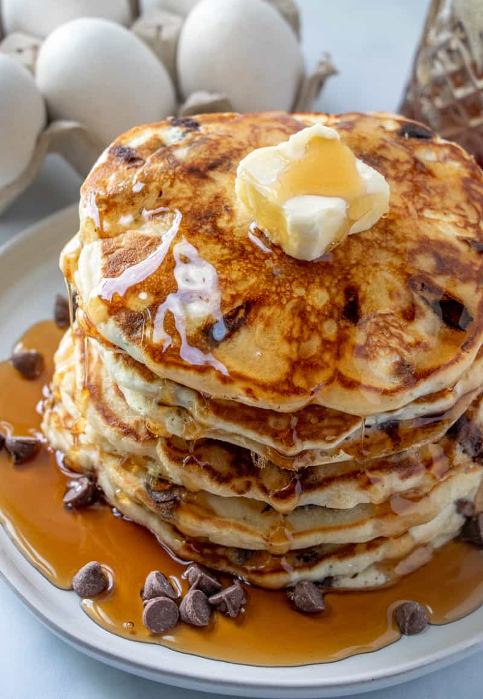

Chocolate Chip Pancakes

Description
These mouth watering chocolate chip pancakes are a go-to recipe in our household. This homemade recipe is very easy and delicious! If you have a sweet tooth and are a choclate fan then this recipe is worth trying out.
Ingredients
- 1 1/2 cup flour
- 4 tsp baking powder
- 1/2 tsp salt
- 2 Tbs sugar
- 1 egg beaten
- 3 Tbs butter melted
- 1 tsp vanilla
- 1 cup chocolate chips
Steps:
- Whisk together flour, baking powder, salt and sugar until combined.
- In another bowl whisk together milk, egg, butter and vanilla.
- Fold or whisk in your wet ingredients into your dry ingredients until just combined.
- Then fold in your chocolate chips.
- Heat a non-stick skillet on stove over medium-high heat and spray with non-stick cooking spray
- Pour the batter onto the pan in 1/4 cup measurements, gently spread the batter out some then press chocolate chips into the batter.
- Cook on each side for about 3-4 minutes until you see bubbles form and burst on top of batter, and the underside is golden.
- Flip until browned on other side, remove to plate to repeat until all batter is used.